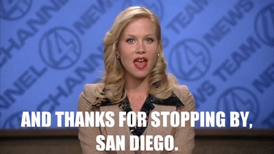

Allow me to introduce myself and...

I love this Movie FYI!
- The RunDown...
- 2005: Graduated from the University of Arizona. #BEARDOWN
- 2006 - 2008: Grew Marketing Startup AArrow Advertising to the "worlds largest sign spinning company" LINK as Director of Operations.
- 2008: Began pursuit of my Dream Career as a politcal operative.
- 2011: Named Campaign Manager for historic 'Comprehensive Pension Reform' Ballot Initiative in San Diego, CA.
- 2014: Tasked to lead current CMO of the US Department of Health and Human Services Dr. Vanila Singh's campaign for the US House of Representatives.
- 2015: tapped to lead State Senator Kelli Ward's primary challenge for US Senate.
- 2017 - 2018: Moved back to San Diego, learned how to code.